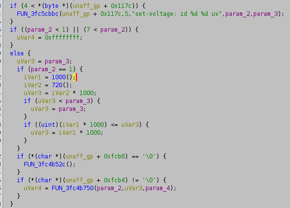

Jeff came up against a 1V limit in his video " Overclocking Raspberry Pi 5 to 3.14 GHz on Pi Day " after firmware was released to remove the 3Ghz limit.
There's a silicon lottery, and I tried to see what I could get on my particular Pi.
Geekbench takes ages to run and has a large run-to-run variance.
sysbench cpu runallows me to iterate more quickly. I'm using this cooler, and I haven't tried any other cooling solutions.
over_voltage_delta=50000
arm_freq=2900
force_turbo=1
total number of events: 32951
total number of events: 32954
over_voltage_delta=50000
arm_freq=3000
force_turbo=1
total number of events: 34076
total number of events: 34094
over_voltage_delta=50000
arm_freq=3200
force_turbo=1
total number of events: 36373
total number of events: 36365
arm_freq=3300 or 3.3Ghz is where it gets very unstable.
The 1V limit is in the firmware. The Raspberry Pi is weird, because it starts by running code on the VPU/GPU. It's an obscure Brodcom VideoCore instruction set.
There's a PDF documenting the Raspberry Pi 4 boot security.
Basically the first 3 boot stages are BOOTROM (AKA BL0), bootsys, and bootmain. Bootrom is baked into the CPU, bootsys and bootmain are signed, so I can't modify them without the signing key, which I don't have. Somehow I doubt Raspberry Pi or Broadcom would hand me the keys. There's some differences between the Raspberry Pi 4 and 5 boot process.
There are some tools to parse and extract the Raspberry Pi 5 firmware (stored on the eeprom):
https://github.com/info-beamer/rpi-eeprom-tools
https://github.com/raspberrypi/rpi-eeprom/
Handily, a Github user made Ghidra support for Videocore.
Searching bootmain for "volt", I found what looks a lot like a voltage limiter.

A single mov.cc instruction can be patched to remove the voltage limit. However, it's in bootmain, which is signed, so we can't just patch bootmain and flash the eeprom.
However, as a root linux user on Raspberry Pi full access to system memory, including memory used by the videocore. I mmap'd /dev/vc-mem, searched for the instruction and replaced it, but i'll leave that as an exercise to the reader. I don't want people blaming me if their Pi decides to halt and catch fire.
If I set arm_freq=3300, it isn't stable. Also, I can't use force_turbo. To get it usable, I limited the cpu to 2.9Ghz as early as possible:
/lib/systemd/system/slowcpu.service
[Unit] Description=Slow CPU Before=basic.target After=local-fs.target sysinit.target DefaultDependencies=no [Service] Type=oneshot ExecStart=/bin/bash /slowcpu [Install] WantedBy=basic.target
/slowcpu
echo 2900000 | tee /sys/devices/system/cpu/cpu*/cpufreq/scaling_max_freq
sudo systemctl enable slowcpu.service
From there, I can remove the voltage limit:
sudo ./removelimit && vcgencmd cache_flush
Then I can put the frequency limit back up to 3.3Ghz
echo 3300000 | sudo tee /sys/devices/system/cpu/cpu*/cpufreq/scaling_max_freq
And make it like force_turbo was on:
echo performance | sudo tee /sys/devices/system/cpu/cpu*/cpufreq/scaling_governor
Checking my voltage and clock with over_voltage_delta=60000:
$ vcgencmd measure_volts volt=1.0437V $ vcgencmd measure_clock arm frequency(0)=3300034816
After all that...
total number of events: 37713
total number of events: 37712
...That wasn't worth it.